C# Fundamentals Learning Roadmap for Interview Preparation
Goal
This roadmap is designed to prepare core C# and .NET fundamentals for interviews.
Topic Index
1. C# Basics
What to Learn
- What is C#?
- What is .NET?
- Difference between .NET Framework, .NET Core, and modern .NET
- Structure of a C# program
- Namespaces
- Assemblies
.exefiles.dllfiles- SDK, runtime, and CLI basics
- CLR
- CTS
- CLS
- IL
- JIT compiler
- Managed code
- Unmanaged code
.exefiles are executable applications..dllfiles are shared libraries used by other applications.- The .NET compiler converts C# code into platform-independent Intermediate Language, also called IL.
- IL code is packaged inside assemblies such as
.exeand.dll. - Processors cannot understand IL directly, so IL must be converted into native machine instructions.
- CLR provides the runtime environment required to execute .NET applications.
- CLR provides services like garbage collection, security, threading, debugging, memory management, and exception handling.
- JIT compiler translates IL into CPU-specific native code during runtime.
- JIT compilation happens when the code is needed at runtime.
- After JIT compilation, the generated native code is executed by the operating system and CPU.
- Managed code is code controlled by CLR.
- Unmanaged code runs outside CLR control and has its own runtime or direct operating system interaction.
CLR Execution Flow

CLR Responsibilities
| Responsibility | Meaning |
|---|---|
| JIT compilation | Converts IL code into machine code during runtime |
| Memory management | Automatically allocates and releases managed memory |
| Garbage collection | Removes unused objects from memory automatically |
| App domain management | Isolates applications for secure execution |
| CLS | Defines common rules for .NET languages |
| CTS | Defines all data types used in .NET |
| Thread management | Handles execution of multiple threads |
| Security management | Provides code and application security |
| Debugging | Helps developers find and fix errors |
| Exception handling | Handles runtime errors without crashing the application |
2. Variables, Data Types, and Operators
What to Learn
- Value types and reference types
- Primitive data types
- Signed numeric data types
- Unsigned numeric data types
charboolstringobjectvardynamicconstreadonly- Nullable types
- Type safety
- Casting
- Conversion
ConvertParseTryParse- Boxing
- Unboxing
- Operators
- Arithmetic operators
- Relational operators
- Logical operators
- Assignment operators
- Bitwise operators
- Ternary operator
- Null-coalescing operator
?? - Null-coalescing assignment operator
??= - Null-conditional operator
?. isoperatorasoperator
Signed Data Types
| Type | Size | Range / Purpose |
|---|---|---|
sbyte | 1 byte | -128 to 127 |
short | 2 bytes | -32,768 to 32,767 |
int | 4 bytes | Around -2 billion to 2 billion |
long | 8 bytes | Very large negative to positive values |
float | 4 bytes | Decimal values |
double | 8 bytes | Large decimal values |
decimal | 16 bytes | High precision decimal values |
nint | Platform dependent | Native signed integer |
Unsigned Data Types
| Type | Size | Range / Purpose |
|---|---|---|
byte | 1 byte | 0 to 255 |
ushort | 2 bytes | 0 to 65,535 |
uint | 4 bytes | 0 to around 4 billion |
ulong | 8 bytes | Very large positive values |
nuint | Platform dependent | Native unsigned integer |
Other Common Types
| Type | Size / Value | Purpose |
|---|---|---|
char | 2 bytes | Stores a single Unicode character |
bool | true / false | Stores boolean value |
string | Reference type | Stores text |
object | Reference type | Base type of all data types |
Type Safety, Casting, and Conversion
- Type safety prevents storing incompatible data types in a variable.
- Casting converts one data type into another using a cast operator.
- Implicit casting is automatic conversion from a smaller or safe type to a larger compatible type.
- Explicit casting is manual conversion from a larger type to a smaller type using a cast operator.
- Conversion uses methods or helper classes such as
Convert,Parse, andTryParse.
int a = 10;
double b = a; // Implicit casting
double x = 10.5;
int y = (int)x; // Explicit casting, data loss possible| Feature | Casting | Conversion |
|---|---|---|
| Meaning | Changing datatype using cast operator | Changing datatype using methods/classes |
| Syntax | (type)value | Convert, Parse, TryParse |
| Performed by | Compiler/runtime | Methods |
| Mostly used for | Compatible numeric types | String/object/data conversions |
| Can handle null | No | Yes, depending on API |
| Exception handling | Limited | Better control |
Convert Class Methods
| Method | Converts To |
|---|---|
Convert.ToInt16() | short |
Convert.ToInt32() | int |
Convert.ToInt64() | long |
Convert.ToDouble() | double |
Convert.ToDecimal() | decimal |
Convert.ToBoolean() | bool |
Convert.ToString() | string |
Convert.ToChar() | char |
Parse vs TryParse
| Feature | Parse() | TryParse() |
|---|---|---|
| Return type | Actual datatype | bool |
| Invalid input | Throws exception | Returns false |
| Exception handling | Required | Not required |
| Safer | No | Yes |
| Performance | Slower when exceptions occur | Better for user input |
| Recommended for user input | No | Yes |
var vs dynamic
| Feature | var | dynamic |
|---|---|---|
| Type decision | Compile time | Runtime |
| Type checking | Compile time | Runtime |
| Actual type | Fixed after assignment | Decided at runtime |
| IntelliSense | Yes | Limited |
| Performance | Faster | Slower |
| Error detection | Compile time | Runtime |
| Type safety | Strong | Weak |
const vs readonly
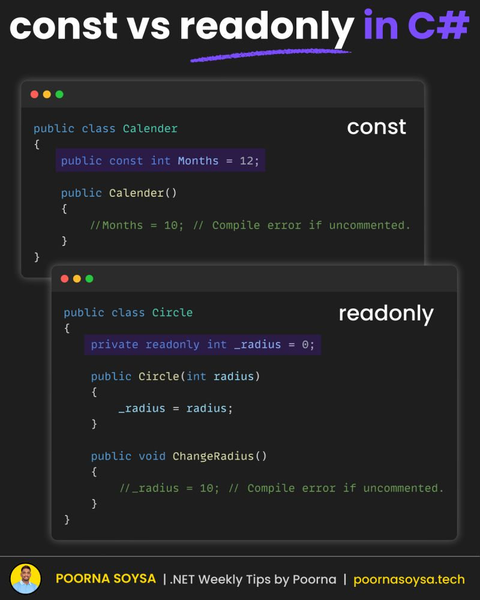
| Feature | const | readonly |
|---|---|---|
| Initialization | Only at declaration | At declaration or in constructor |
| Mutability | Always immutable | Immutable after initialization |
| Runtime vs compile time | Compile time | Runtime |
| Scope | Always static | Instance-level or static |
Null-Coalescing Operators
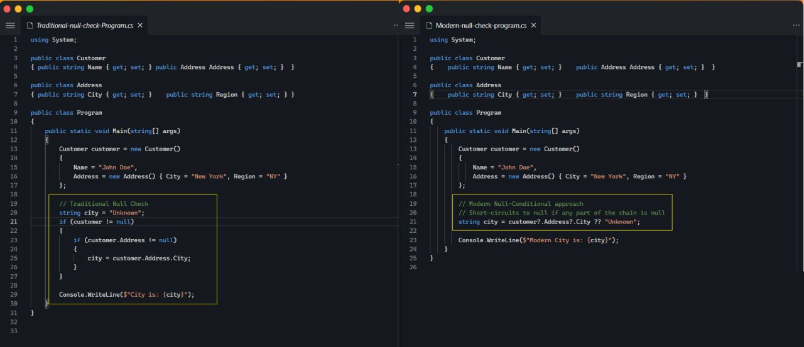
??returns a default value when the left side value is null.??=assigns a value only when the variable is null.
string name = null;
string result = name ?? "Guest";
name ??= "Akash";is and as Operators
ischecks whether an object is compatible with a specific type.asperforms conversion between compatible reference types and returnsnullif conversion fails.
Boxing and Unboxing
- Boxing converts a value type into a reference type such as
object. - Unboxing converts the boxed object back into a value type.
- Boxing and unboxing create extra heap objects, increase GC pressure, and reduce performance.
int x = 10;
object obj = x; // Boxing
int value = (int)obj; // UnboxingQuick Reference: Convert, Parse, TryParse, Boxing & Unboxing
Use this table to choose the right conversion API or concept at a glance.
| Topic | Method / Property / Concept | Namespace | When to use | Example |
|---|---|---|---|---|
Convert | Method | System | When value can be null | int n = Convert.ToInt32(null); // 0 |
Parse | Method | System | When string value is 100% valid | int n = int.Parse("123"); // 123 |
TryParse | Method | System | When value may be invalid, like user input | bool ok = int.TryParse("abc", out int n); // false |
| Boxing | Concept | No specific namespace | When value type is stored in object | object obj = 10; |
| Unboxing | Concept | No specific namespace | When object is converted back to value type | int n = (int)obj; |
3. Control Flow Statements
What to Learn
if,else if, andelseswitchstatementswitchexpressionforloopwhileloopdo whileloopforeachloopbreakcontinuegoto- Pattern matching basics
- Use
ifandelsewhen conditions are different or complex. - Use
switchwhen comparing one value against multiple possible values. - Use
forwhen the number of iterations is known. - Use
whilewhen the number of iterations depends on a condition. - Use
foreachto iterate through collections. foreachinternally usesIEnumerableandIEnumerator.foreachhides calls toMoveNext()andCurrent.
4. Methods and Parameters
What to Learn
- Method declaration
- Return types
- Method overloading
- Optional parameters
- Named arguments
refparametersoutparametersinparametersparamskeyword- Local functions
- Expression-bodied methods
- Recursive methods
- Named parameters are used to specify an argument by name instead of position.
- Optional parameters allow some arguments to be skipped by providing default values.
paramsis used when a method can accept a variable number of parameters.outandrefcan be used to return or modify more than one value from a method.outis used to return a new value. The variable does not need to be initialized before being passed.refis used to modify an existing value. The variable must be initialized before being passed.
ref vs out
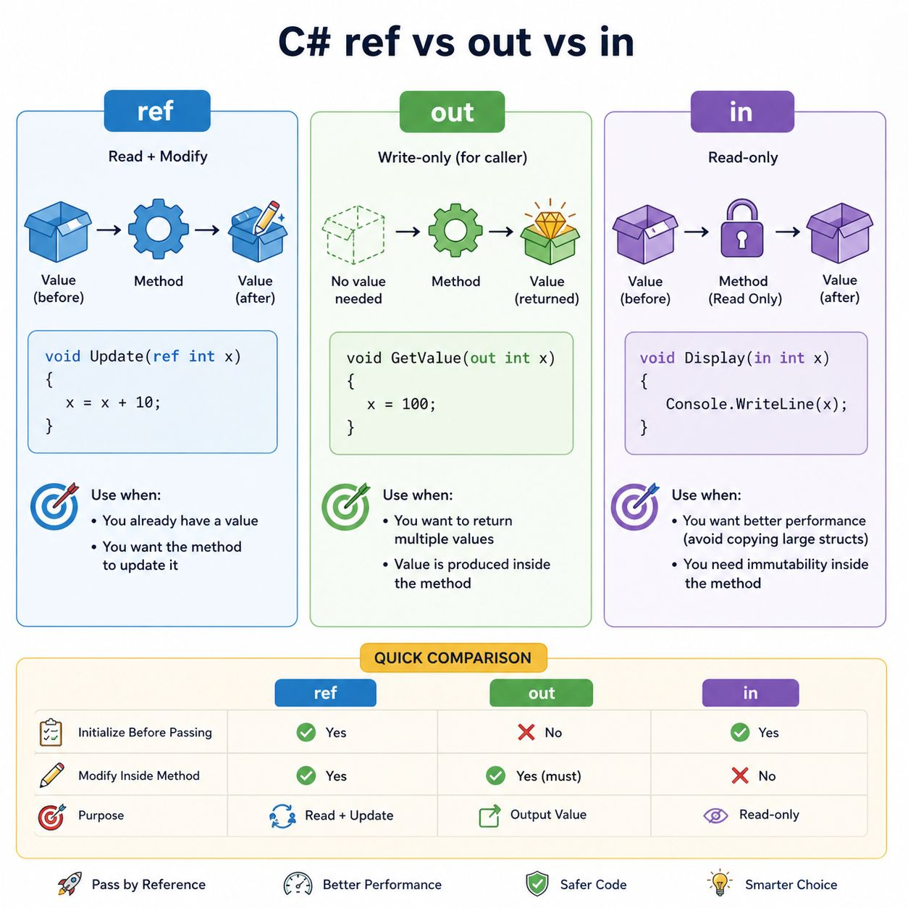
| Feature | ref | out |
|---|---|---|
| Purpose | Pass an existing value and allow the method to modify it | Return a value from the method through a parameter |
| Initialization before method call | Required | Not required |
| Assignment inside method | Optional, but usually modified | Required before method returns |
| Data flow | Input and output | Output only |
| Common use | Modify an existing variable | Return multiple values from a method |
| Compiler rule | Variable must be assigned before passing | Method must assign value before returning |
static void UpdateValue(ref int number)
{
number += 10;
}
static void GetValue(out int number)
{
number = 100;
}5. Static Members and Extension Methods
What to Learn
- Static class
- Static fields
- Static methods
- Static properties
- Static constructor
- Extension methods
thiskeyword in extension methods- Common use cases of extension methods
- Extension methods allow adding new methods to an existing type without modifying the original source code.
- Extension methods must be declared inside a static class.
- Extension methods themselves must be static.
- The
thiskeyword binds the extension method to the target type. - Extension methods are useful when you want to add helper behavior to a type whose source code you do not control.
public static class StringExtensions
{
public static bool IsNullOrEmptyText(this string value)
{
return string.IsNullOrEmpty(value);
}
}6. Strings and String Handling
What to Learn
stringtypeSystem.String- String immutability
- String interpolation
- String concatenation
- String interning
StringBuilder- Common string methods
- String comparison
- String formatting
- Verbatim strings
- Raw string literals
- C# strings are objects.
stringis a reference type.stringis a C# alias forSystem.String.Stringandstringwork identically.- String objects are created in heap memory.
- Strings are immutable, meaning the value cannot be changed after creation.
- When a string is modified, a new string object is created.
- String interning allows CLR to store only one copy of identical string literals.
- Strings are immutable, which also helps thread safety because multiple threads can read the same string without one thread changing it.
string name = "Akash";
name = name + " Patel";
// Original string: "Akash"
// New string: "Akash Patel"Common String Operations
- Concatenate
- Trim
- Replace
- Contains
- Compare
- Format
- Split
- Join
string vs StringBuilder
| Feature | string | StringBuilder |
|---|---|---|
| Type | Immutable | Mutable |
| Performance | Slow for repeated modifications | Fast for repeated modifications |
| Memory usage | Creates new memory on each change | Reuses internal buffer |
| Namespace | System | System.Text |
| Best use | Few changes or fixed text | Many repeated changes |
StringBuilder sb = new StringBuilder();
sb.Append("Hello");
sb.Append(" World");7. Arrays and Collections
What to Learn
- Single-dimensional arrays
- Multi-dimensional arrays
- Jagged arrays
Arrayclass- Non-generic collections
- Generic collections
List<T>Dictionary<TKey, TValue>HashSet<T>Queue<T>Stack<T>LinkedList<T>SortedListSortedDictionaryIEnumerableIEnumeratorICollectionIListIDictionaryIComparableIComparer- Generic vs non-generic collections
Collections vs Generics
- Non-generic collections store data as
object, so they are not type safe. - Generic collections store strongly typed data and are safer and faster.
- Generics avoid unnecessary casting and reduce boxing/unboxing.
| Feature | Non-Generic Collections | Generic Collections |
|---|---|---|
| Namespace | System.Collections | System.Collections.Generic |
| Type safety | No | Yes |
| Data storage | Stores as object | Stores specific type |
| Casting required | Yes | No |
| Boxing/unboxing | Required for value types | Not required |
| Performance | Slower | Faster |
| Compile-time checking | No | Yes |
| Runtime error chance | More | Less |
| Examples | ArrayList, Hashtable, Stack, Queue | List<int>, Dictionary<int,string>, Stack<int> |
| Recommendation | Old applications | Modern applications |
System.Collections Hierarchy
System.Collections
│
├── IEnumerable
│ │
│ ├── Method
│ │ └── GetEnumerator()
│ │
│ └── IEnumerator
│ │
│ ├── Property
│ │ └── Current
│ │
│ └── Methods
│ ├── MoveNext()
│ ├── Reset()
│ └── Dispose()
│
├── ICollection
│ │
│ ├── Properties
│ │ ├── Count
│ │ ├── IsSynchronized
│ │ └── SyncRoot
│ │
│ └── Methods
│ ├── CopyTo()
│ └── GetEnumerator()
│
├── IList
│ │
│ ├── Properties
│ │ ├── IsFixedSize
│ │ ├── IsReadOnly
│ │ └── Item[index]
│ │
│ └── Methods
│ ├── Add()
│ ├── Insert()
│ ├── Remove()
│ ├── RemoveAt()
│ ├── Contains()
│ ├── IndexOf()
│ └── Clear()
│
├── IDictionary
│ │
│ ├── Properties
│ │ ├── Keys
│ │ ├── Values
│ │ ├── Item[key]
│ │ ├── IsFixedSize
│ │ └── IsReadOnly
│ │
│ └── Methods
│ ├── Add()
│ ├── Remove()
│ ├── Contains()
│ └── Clear()
│
├── ArrayList
│ │
│ ├── Methods
│ │ ├── Add()
│ │ ├── Insert()
│ │ ├── Remove()
│ │ ├── RemoveAt()
│ │ ├── Sort()
│ │ ├── Reverse()
│ │ └── Clear()
│ │
│ └── Properties
│ ├── Count
│ ├── Capacity
│ └── Item[index]
│
├── Queue
│ │
│ ├── Methods
│ │ ├── Enqueue()
│ │ ├── Dequeue()
│ │ ├── Peek()
│ │ └── Clear()
│ │
│ └── Property
│ └── Count
│
├── Stack
│ │
│ ├── Methods
│ │ ├── Push()
│ │ ├── Pop()
│ │ ├── Peek()
│ │ └── Clear()
│ │
│ └── Property
│ └── Count
│
└── Hashtable
│
├── Methods
│ ├── Add()
│ ├── Remove()
│ ├── ContainsKey()
│ ├── ContainsValue()
│ └── Clear()
│
└── Properties
├── Keys
├── Values
└── CountSystem.Collections.Generic Hierarchy
System.Collections.Generic
│
├── IEnumerable<T>
│ │
│ ├── Method
│ │ └── GetEnumerator()
│ │
│ └── IEnumerator<T>
│ │
│ ├── Property
│ │ └── Current
│ │
│ └── Methods
│ ├── MoveNext()
│ ├── Reset()
│ └── Dispose()
│
├── ICollection<T>
│ │
│ ├── Properties
│ │ ├── Count
│ │ └── IsReadOnly
│ │
│ └── Methods
│ ├── Add()
│ ├── Remove()
│ ├── Clear()
│ ├── Contains()
│ ├── CopyTo()
│ └── GetEnumerator()
│
├── IList<T>
│ │
│ ├── Property
│ │ └── this[int index]
│ │
│ └── Methods
│ ├── IndexOf()
│ ├── Insert()
│ └── RemoveAt()
│
├── IDictionary<TKey, TValue>
│ │
│ ├── Properties
│ │ ├── Keys
│ │ └── Values
│ │
│ └── Methods
│ ├── Add()
│ ├── Remove()
│ ├── ContainsKey()
│ └── TryGetValue()
│
├── ISet<T>
│ │
│ └── Methods
│ ├── UnionWith()
│ ├── IntersectWith()
│ ├── ExceptWith()
│ └── SymmetricExceptWith()
│
├── IReadOnlyCollection<T>
│ │
│ └── Property
│ └── Count
│
├── IReadOnlyList<T>
│ │
│ └── Property
│ └── this[int index]
│
├── List<T>
│ │
│ ├── Methods
│ │ ├── Add()
│ │ ├── Insert()
│ │ ├── Remove()
│ │ ├── RemoveAt()
│ │ ├── Sort()
│ │ ├── Reverse()
│ │ └── Clear()
│ │
│ └── Properties
│ ├── Count
│ ├── Capacity
│ └── Item[index]
│
├── Queue<T>
│ │
│ ├── Methods
│ │ ├── Enqueue()
│ │ ├── Dequeue()
│ │ ├── Peek()
│ │ └── Clear()
│ │
│ └── Property
│ └── Count
│
├── Stack<T>
│ │
│ ├── Methods
│ │ ├── Push()
│ │ ├── Pop()
│ │ ├── Peek()
│ │ └── Clear()
│ │
│ └── Property
│ └── Count
│
├── Dictionary<TKey, TValue>
│ │
│ ├── Methods
│ │ ├── Add()
│ │ ├── Remove()
│ │ ├── ContainsKey()
│ │ ├── TryGetValue()
│ │ └── Clear()
│ │
│ └── Properties
│ ├── Keys
│ ├── Values
│ └── Count
│
├── HashSet<T>
│ │
│ ├── Methods
│ │ ├── Add()
│ │ ├── Remove()
│ │ ├── UnionWith()
│ │ ├── IntersectWith()
│ │ └── Clear()
│ │
│ └── Property
│ └── Count
│
└── LinkedList<T>
│
├── Methods
│ ├── AddFirst()
│ ├── AddLast()
│ ├── Remove()
│ ├── Find()
│ └── Clear()
│
└── Properties
├── First
├── Last
└── CountforeachhidesMoveNext()andCurrent.foreachautomatically usesIEnumerator<T>internally.IEnumerable<T>only supports iteration (foreach).IEnumeratoronly browses the collection.ICollectionbrowses the collection and also provides count.IListorIDictionarysupports browse, count, add, and remove operations.
Common Collection Interfaces
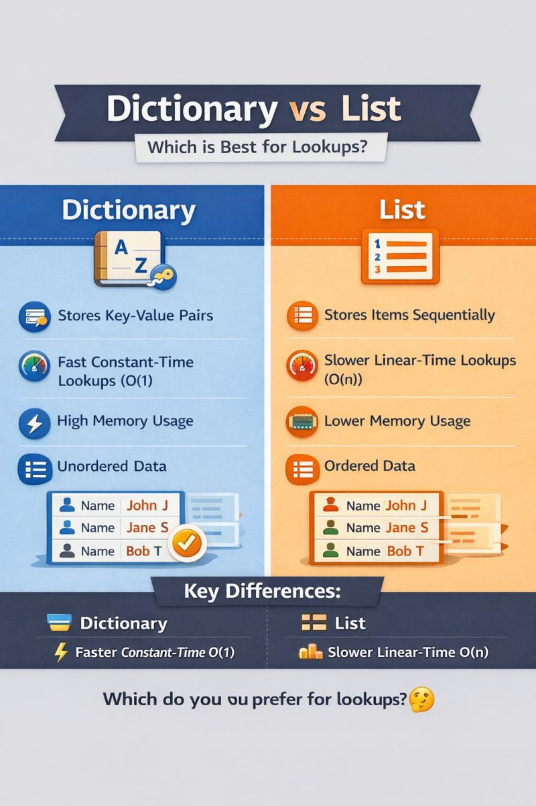
| Interface | Purpose |
|---|---|
IEnumerable / IEnumerable<T> | Supports iteration using foreach |
IEnumerator / IEnumerator<T> | Moves through a collection using MoveNext() and Current |
ICollection / ICollection<T> | Supports iteration plus count and basic collection operations |
IList / IList<T> | Supports index-based access, add, insert, remove, and search |
IDictionary / IDictionary<TKey,TValue> | Stores key-value pairs |
ISet<T> | Supports set operations such as union and intersection |
IEnumerable vs IEnumerator
| Feature | IEnumerable | IEnumerator |
|---|---|---|
| Purpose | Used to iterate collection | Used to move through collection |
| Generic version | IEnumerable<T> | IEnumerator<T> |
| Main method | GetEnumerator() | MoveNext(), Reset(), Dispose() |
| Main property | None | Current |
| Used by | Collection classes | foreach internally |
| Relation | Creates enumerator | Used by enumerator |
IComparable vs IComparer
| Feature | IComparable | IComparer |
|---|---|---|
| Purpose | Default sorting | Custom sorting |
| Comparison logic | Inside same type | Separate comparer type |
| Method | CompareTo() | Compare() |
| Namespace | System | System.Collections.Generic |
| Sorting type | Single/default | Multiple/custom |
| Who controls sorting | Object itself | External comparer |
8. Generics
What to Learn
- Generic classes
- Generic methods
- Generic interfaces
- Type parameters
- Generic constraints
wherekeyword- Covariance
- Contravariance
- Benefits of generics
- Generics allow classes, methods, and interfaces to use a placeholder type such as
T. - Generic code can work with different data types safely.
- Generic constraints restrict which types can be used as type arguments.
- Constraints improve compile-time safety and allow access to members of a known base type or interface.
class Repository<T> where T : class
{
public void Add(T item)
{
// Add item
}
}Common Generic Constraint Examples
| Constraint | Meaning |
|---|---|
where T : class | Allows only reference types |
where T : struct | Allows only value types |
where T : new() | Requires a public parameterless constructor |
where T : BaseClass | Requires type to inherit from a specific base class |
where T : IInterface | Requires type to implement a specific interface |
9. Exception Handling
What to Learn
trycatchfinallythrowthrow exvsthrow- Custom exceptions
- Exception filters
- Checked and unchecked exceptions concept
- Best practices for exception handling
- Exception handling allows runtime errors to be handled without crashing the application.
trycontains code that may throw an exception.catchhandles the exception.finallyruns cleanup code whether an exception occurs or not.throwpreserves the original stack trace.throw exresets the stack trace and is usually avoided.- Do not use exceptions for normal control flow.
10. Delegates, Events, and Lambda Expressions
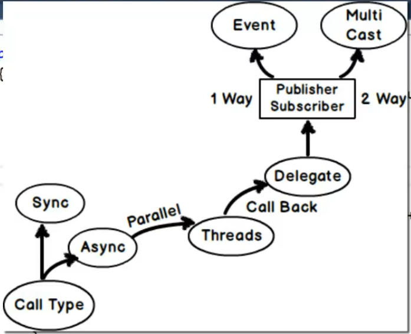
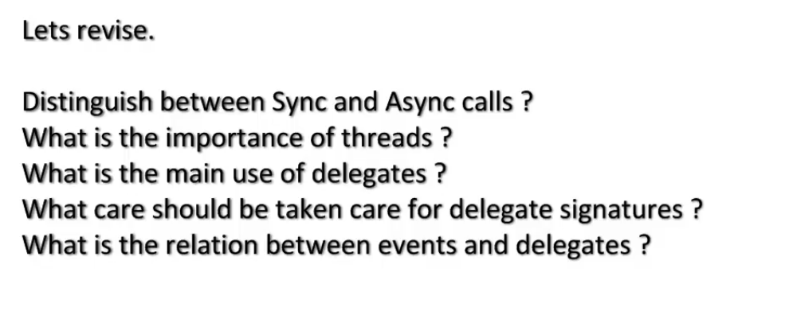
What to Learn
- Delegates
- Multicast delegates
- Anonymous methods
- Lambda expressions
FuncActionPredicate- Events
- Event handlers
- Publisher-subscriber pattern
- Delegates are type-safe references to methods.
Funcrepresents a method that returns a value.Actionrepresents a method that does not return a value.Predicaterepresents a method that returns a boolean value.- Lambda expressions provide a short syntax for anonymous functions.
11. LINQ
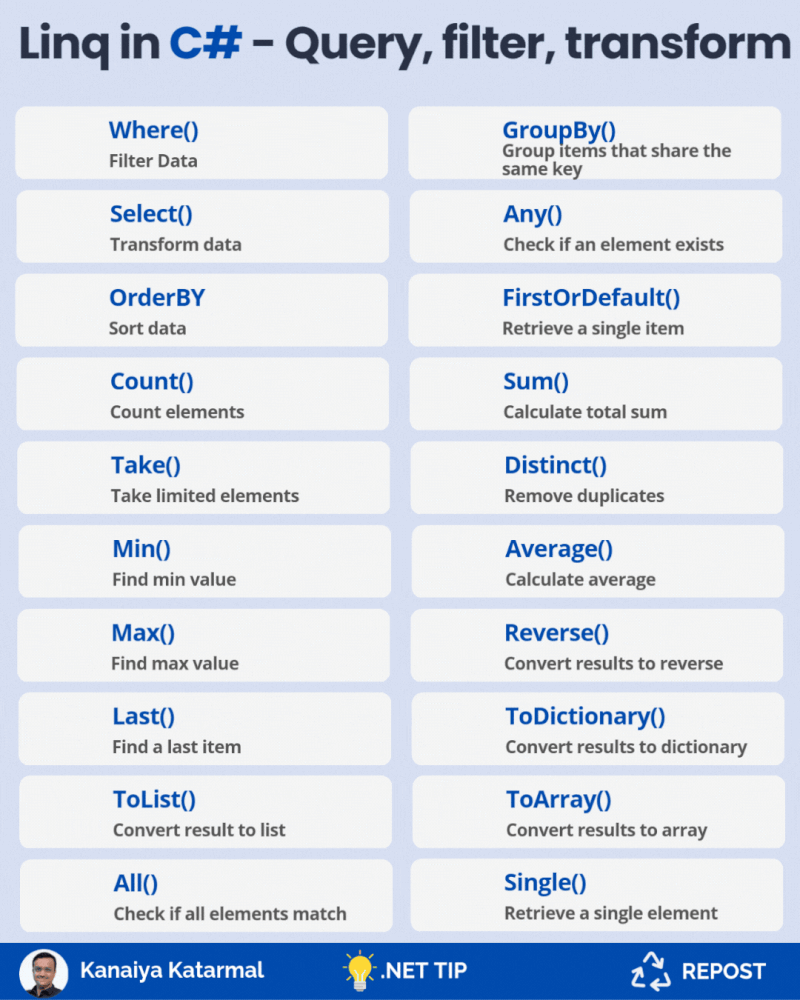
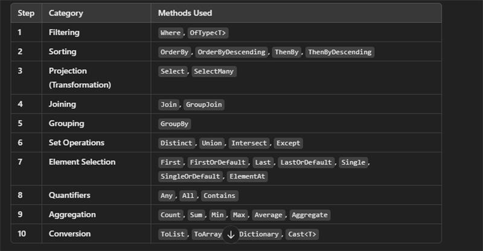
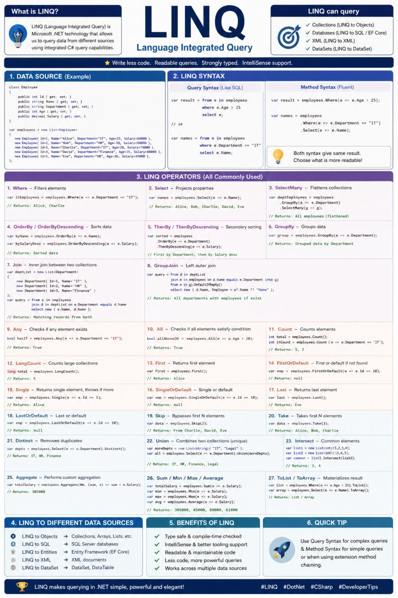
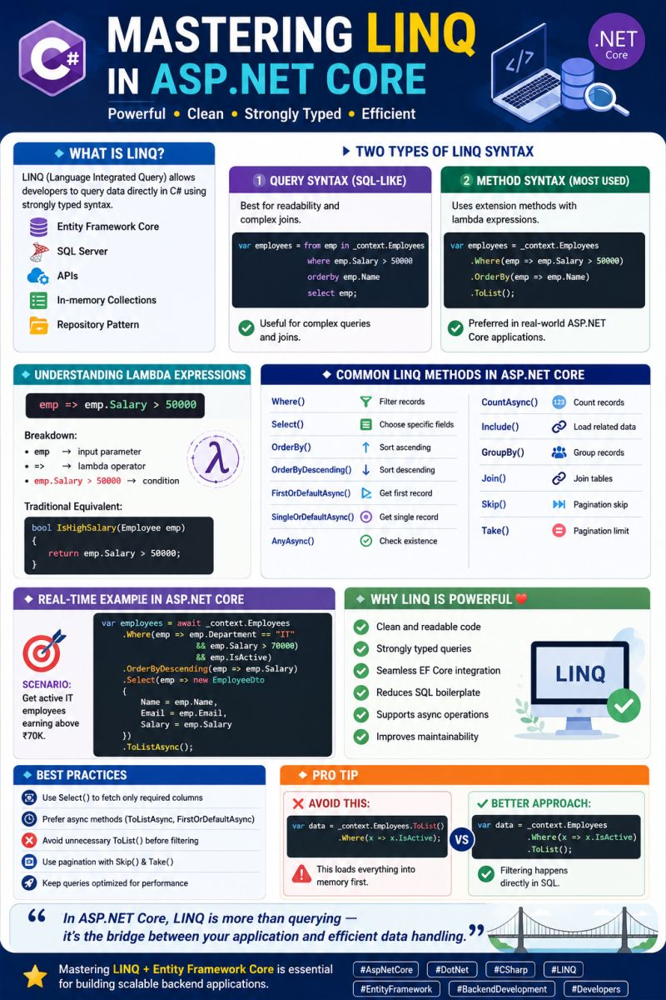
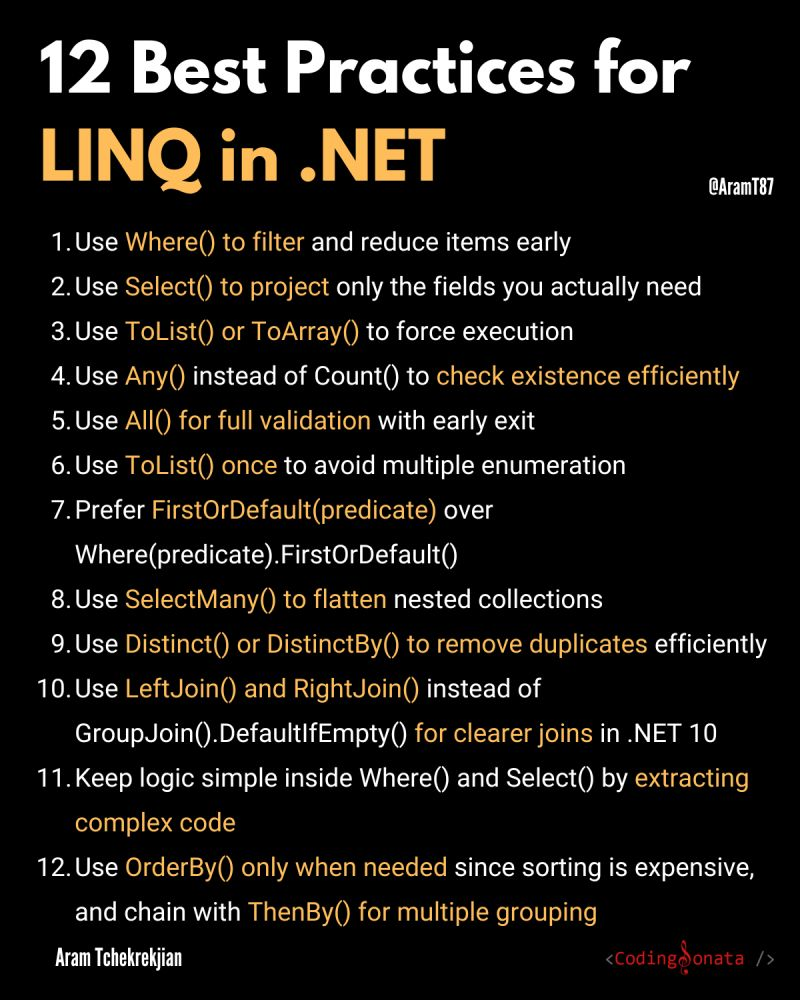
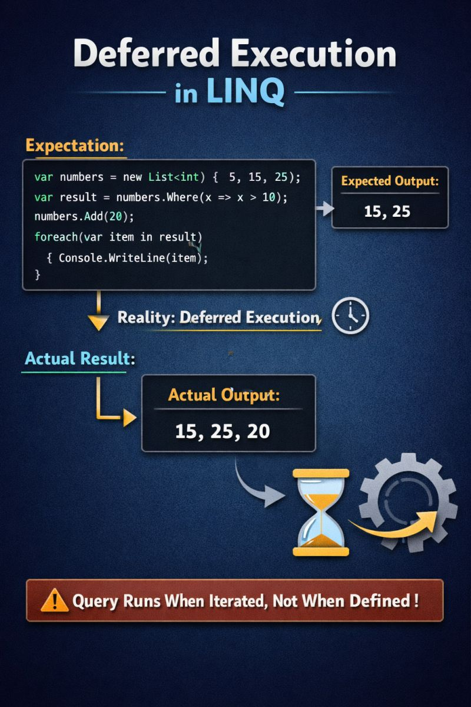
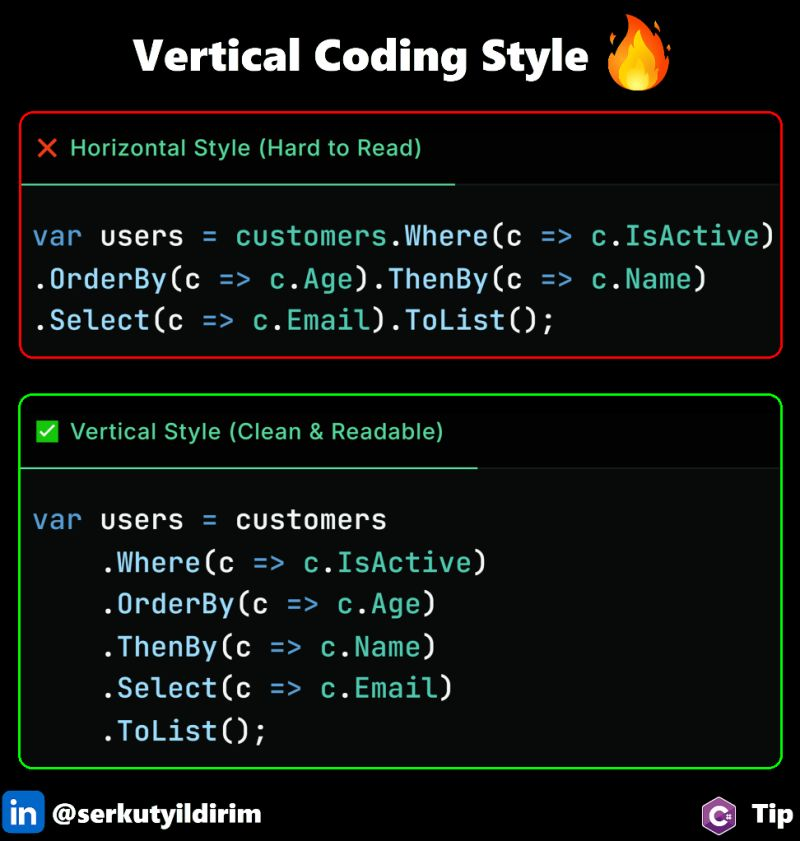
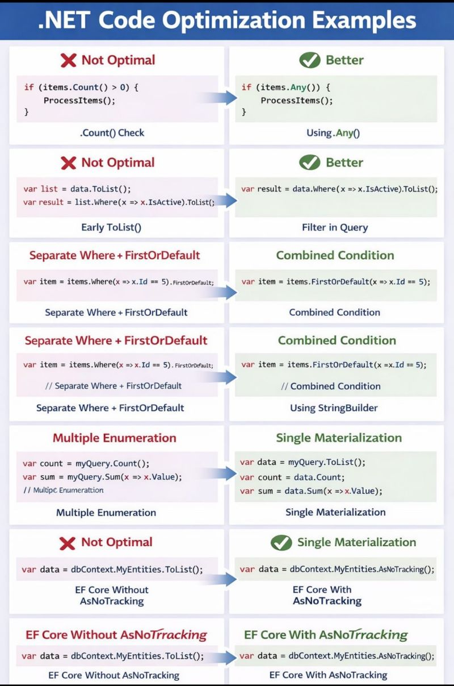
What to Learn
- What is LINQ?
- LINQ query syntax
- LINQ method syntax
WhereSelectSelectManyOrderByOrderByDescendingThenByGroupByJoinGroupJoinAnyAllContainsFirstFirstOrDefaultSingleSingleOrDefaultLastLastOrDefaultCountSumMinMaxAverageDistinctUnionIntersectExceptSkipTakeToListToArrayToDictionary- Deferred execution
- Immediate execution
IEnumerablevsIQueryable
- LINQ provides query capabilities directly in C#.
- Query syntax looks similar to SQL.
- Method syntax uses extension methods and lambda expressions.
- Deferred execution means query evaluation is delayed until the value is actually needed.
ToList(),ToArray(), andToDictionary()force immediate execution.First()expects at least one element and throws an exception if none exists.FirstOrDefault()returns the first element or the default value when no element is found.Single()expects exactly one matching element and throws an exception if none or multiple are found.SingleOrDefault()returns the default value if no record is found and throws an exception if more than one element matches.- Pagination can be done using
Skip()andTake().
var page = numbers
.Skip(0)
.Take(2)
.ToList();IEnumerable vs IQueryable
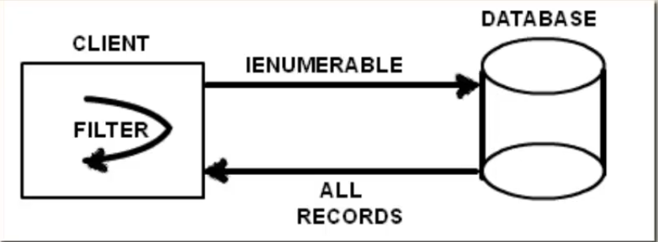
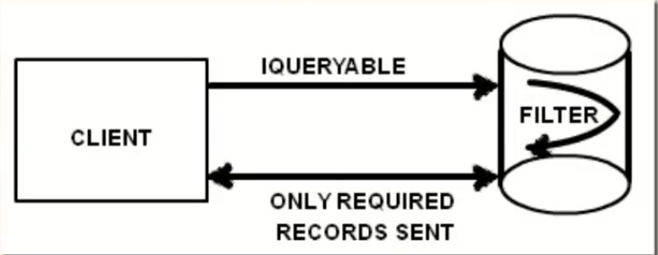
| Feature | IEnumerable | IQueryable |
|---|---|---|
| Namespace | System.Collections | System.Linq |
| Purpose | Iterates in-memory collection | Builds queries for a remote data source |
| Execution | Deferred for LINQ methods | Deferred |
| Filtering | Usually done in application memory | Usually done at data source/server |
| Performance | Slower for large remote data | Better for queryable data sources |
| Supports LINQ | Yes | Yes |
| Query translation | No | Yes, provider-based |
| Best used for | Arrays, lists, collections | Remote query providers |
| Data source | In-memory data | Remote data source |
| Extension methods | Enumerable methods | Queryable methods |
System.Linq Hierarchy
System.Linq
│
├── IEnumerable<T>
│ │
│ ├── Conversion Methods
│ │ ├── ToList() : List<T>
│ │ ├── ToArray() : T[]
│ │ ├── ToDictionary() : Dictionary<TKey,TValue>
│ │ └── Cast<TResult>() : IEnumerable<TResult>
│ │
│ ├── Filtering Methods
│ │ ├── Where() : IEnumerable<T>
│ │ ├── OfType<TResult>() : IEnumerable<TResult>
│ │ └── Skip() : IEnumerable<T>
│ │
│ ├── Projection Methods
│ │ ├── Select() : IEnumerable<TResult>
│ │ └── SelectMany() : IEnumerable<TResult>
│ │
│ ├── Sorting Methods
│ │ ├── OrderBy() : IOrderedEnumerable<T>
│ │ ├── OrderByDescending() : IOrderedEnumerable<T>
│ │ ├── ThenBy() : IOrderedEnumerable<T>
│ │ └── Reverse() : IEnumerable<T>
│ │
│ ├── Grouping Methods
│ │ ├── GroupBy() : IEnumerable<IGrouping<TKey,T>>
│ │ └── ToLookup() : ILookup<TKey,T>
│ │
│ ├── Joining Methods
│ │ ├── Join() : IEnumerable<TResult>
│ │ └── GroupJoin() : IEnumerable<TResult>
│ │
│ ├── Aggregate Methods
│ │ ├── Count() : int
│ │ ├── Sum() : numeric type
│ │ ├── Min() : T
│ │ ├── Max() : T
│ │ ├── Average() : double
│ │ └── Aggregate() : TResult
│ │
│ ├── Quantifier Methods
│ │ ├── Any() : bool
│ │ ├── All() : bool
│ │ └── Contains() : bool
│ │
│ ├── Element Methods
│ │ ├── First() : T
│ │ ├── FirstOrDefault() : T
│ │ ├── Last() : T
│ │ ├── LastOrDefault() : T
│ │ ├── Single() : T
│ │ └── ElementAt() : T
│ │
│ ├── Set Methods
│ │ ├── Distinct() : IEnumerable<T>
│ │ ├── Union() : IEnumerable<T>
│ │ ├── Intersect() : IEnumerable<T>
│ │ └── Except() : IEnumerable<T>
│ │
│ └── Partition Methods
│ ├── Take() : IEnumerable<T>
│ ├── Skip() : IEnumerable<T>
│ ├── TakeWhile() : IEnumerable<T>
│ └── SkipWhile() : IEnumerable<T>
│
│
└── IQueryable<T>
│
├── Properties
│ ├── Provider : IQueryProvider
│ ├── Expression : Expression
│ └── ElementType : Type
│
├── Methods
│ ├── Where() : IQueryable<T>
│ ├── Select() : IQueryable<TResult>
│ ├── OrderBy() : IOrderedQueryable<T>
│ ├── GroupBy() : IQueryable<IGrouping<TKey,T>>
│ └── Join() : IQueryable<TResult>
│
└── Converts LINQ query into SQL query12. File Handling and Streams
What to Learn
FileFileInfoDirectoryDirectoryInfoPathStreamFileStreamStreamReaderStreamWriterMemoryStream- Reading and writing files
usingdirectiveusingstatementusingdeclaration- Alias directive
IDisposable
usingcan import namespaces.usingcan automatically dispose resources.- The
usingstatement ensuresDispose()is called even if an exception occurs. usingcan also create an alias for a namespace or type.IDisposableis commonly used for resources such as files, streams, database connections, and network resources.
using System;
using (var stream = new FileStream("file.txt", FileMode.Open))
{
// Use stream
}
using ProjectA = MyCompany.ProjectA.SubModule;13. Memory Management and Garbage Collection
What to Learn
- Stack memory
- Heap memory
- Managed heap
- Managed memory
- Unmanaged memory
- Garbage collection
- Generations in GC
- Gen 0
- Gen 1
- Gen 2
- Large Object Heap
- Finalizers
- Destructors
IDisposableDispose()usingstatementusingdeclaration- Weak references
- Memory leaks in .NET
Garbage Collector
- Garbage Collector automatically frees unused managed memory in .NET.
- CLR decides when the Garbage Collector should run.
- Developers generally do not control the exact execution time of GC.
- GC usually runs when memory pressure increases or memory allocation is required.
- Memory cleanup in .NET is called non-deterministic finalization because timing is unpredictable.
- Finalization releases resources before an object is removed from memory.
- A finalizer/destructor is executed when the Garbage Collector cleans the object.
- Finalizers are not guaranteed to run immediately after an object becomes unused.
- Heavy business logic inside finalizers is not recommended.
- Finalizers should mainly be used for unmanaged resource cleanup.
Dispose()provides deterministic cleanup and should be preferred over finalizers.- The
IDisposablepattern is commonly used for files, streams, database connections, and similar resources. usingautomatically callsDispose()after resource usage.
Stack vs Heap
| Feature | Stack | Heap |
|---|---|---|
| Speed | Fast | Slower |
| Storage | Local variables, method calls, reference addresses | Objects and dynamically allocated data |
| Managed by | Automatically by method scope | Garbage Collector |
| Size | Smaller | Larger |
| Lifetime | Method scope | Until GC removes object |
Value Type vs Reference Type
| Feature | Value Type | Reference Type |
|---|---|---|
| Stores | Actual value | Memory address/reference |
| Memory | Usually stack or inline | Heap for actual object |
| Copy behavior | Copies value | Copies reference |
| Nullable | No, except nullable value types | Yes |
| Examples | int, double, bool, char, struct, enum, DateTime | class, string, array, delegate, object |
GC Generations
| Generation | Purpose |
|---|---|
| Gen 0 | Short-lived objects such as temporary objects and method-level objects |
| Gen 1 | Objects that survived Gen 0 collection; buffer between Gen 0 and Gen 2 |
| Gen 2 | Long-lived objects such as static objects, application cache, and long-living references |
| Large Object Heap | Stores objects larger than about 85 KB |
Useful GC Methods
| Method | Purpose |
|---|---|
GC.Collect() | Forces garbage collection manually |
GC.GetGeneration() | Returns the generation of an object |
GC.SuppressFinalize() | Prevents finalizer execution |
Memory Management Hierarchy
Memory Management in .NET
│
├── Stack Memory
│ └── Stores value types, method calls, and local variables.
│
├── Heap Memory
│ └── Stores reference type objects.
│
├── Managed Memory
│ └── Memory controlled by CLR (.NET Runtime).
│
│ ├── Managed Code
│ │ └── Code executed under CLR.
│ │
│ │ ├── C#
│ │ ├── VB.NET
│ │ └── F#
│ │
│ ├── Managed Heap
│ │ └── Stores managed objects created using new keyword.
│ │
│ └── Garbage Collector (GC)
│ └── Automatically cleans unused managed objects.
│
│ ├── Purpose
│ │ ├── Frees unused memory
│ │ ├── Prevents memory leaks
│ │ └── Manages heap automatically
│ │
│ ├── Generations
│ │ │
│ │ ├── Gen 0
│ │ │ └── Stores short-lived objects.
│ │ │
│ │ │ ├── Example
│ │ │ │ ├── Local objects
│ │ │ │ ├── Temporary strings
│ │ │ │ └── Method-level objects
│ │ │ │
│ │ │ └── Fastest collection
│ │ │
│ │ ├── Gen 1
│ │ │ └── Stores objects surviving Gen 0.
│ │ │
│ │ │ ├── Medium-lived objects
│ │ │ └── Buffer between Gen0 and Gen2
│ │ │
│ │ └── Gen 2
│ │ └── Stores long-lived objects.
│ │
│ │ ├── Example
│ │ │ ├── Static objects
│ │ │ ├── Singleton objects
│ │ │ └── Application cache
│ │ │
│ │ └── Slowest and expensive collection
│ │
│ ├── Large Object Heap (LOH)
│ │ └── Stores objects larger than 85 KB.
│ │
│ ├── GC Methods
│ │ │
│ │ ├── GC.Collect()
│ │ │ └── Forces garbage collection manually.
│ │ │
│ │ ├── GC.GetGeneration()
│ │ │ └── Returns generation of object.
│ │ │
│ │ └── GC.SuppressFinalize()
│ │ └── Prevents finalizer execution.
│ │
│ └── Object Lifecycle
│ │
│ ├── Object Created
│ │ └── Stored in Gen 0
│ │
│ ├── Survives Collection
│ │ └── Moved to Gen 1
│ │
│ ├── Survives Again
│ │ └── Moved to Gen 2
│ │
│ └── No References
│ └── Removed by GC
│
└── Unmanaged Memory
└── Memory/resources outside CLR control.
├── Unmanaged Resources
│ ├── File Handles
│ ├── Database Connections
│ ├── Network Sockets
│ ├── COM Objects
│ └── Printer Resources
│
├── Not cleaned directly by GC
│
└── Manual Cleanup
│
├── IDisposable
│ └── Provides cleanup mechanism.
│
├── Dispose()
│ └── Releases unmanaged resources manually.
│
└── using statement
└── Automatically calls Dispose().14. Asynchronous Programming
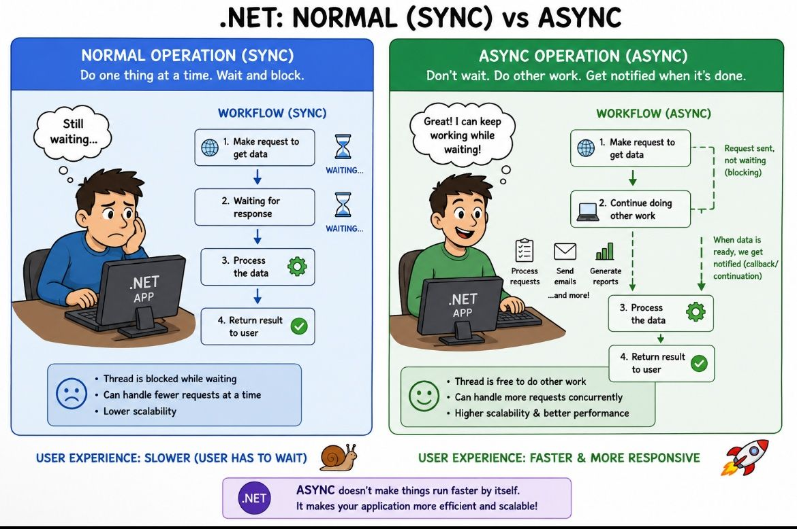
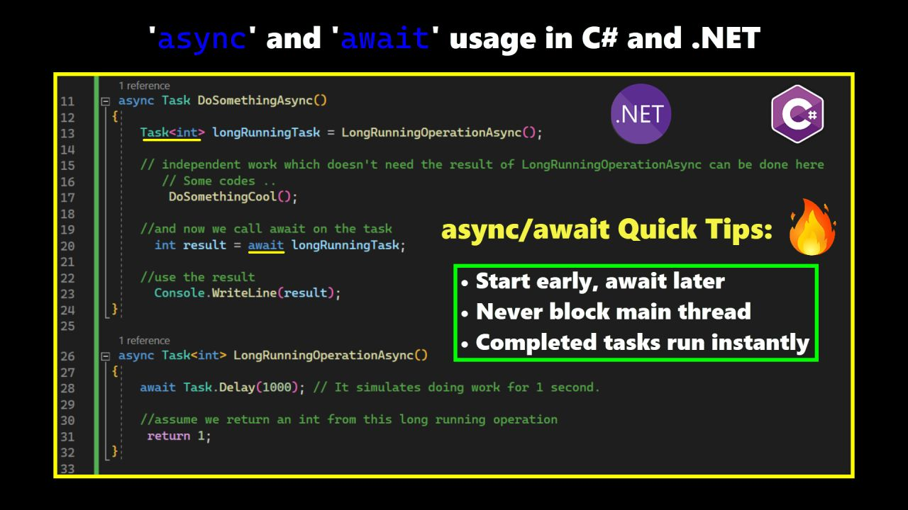
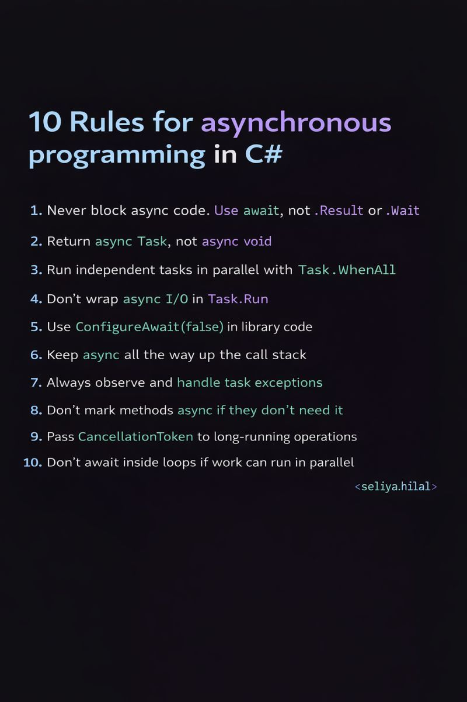
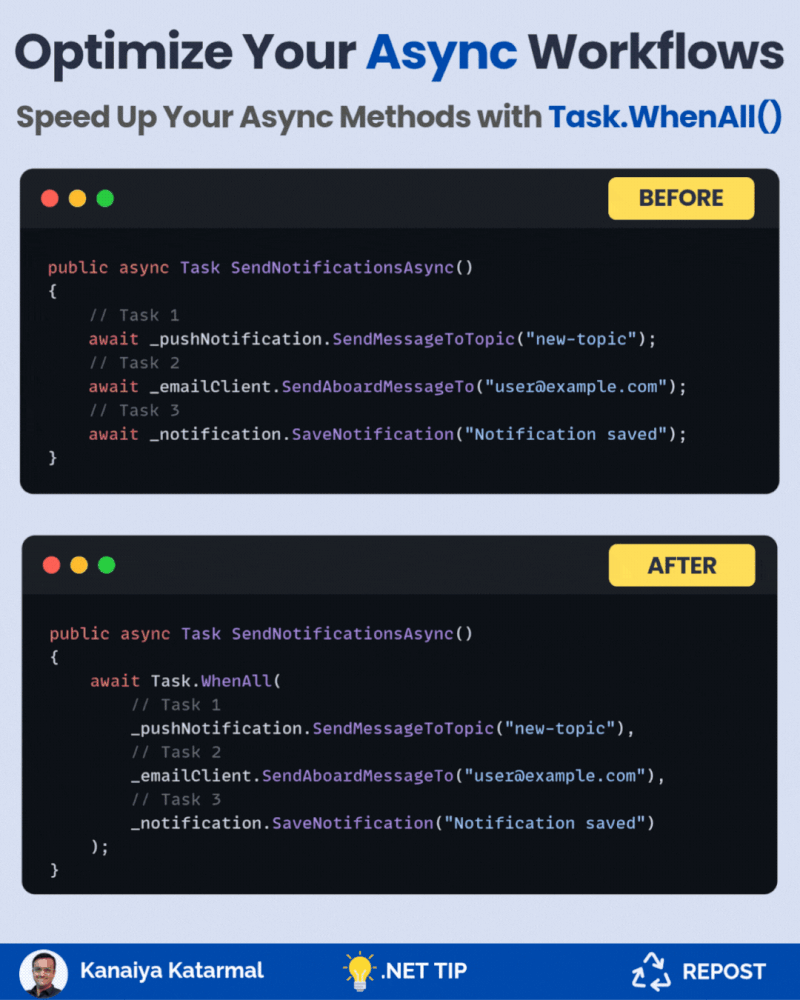
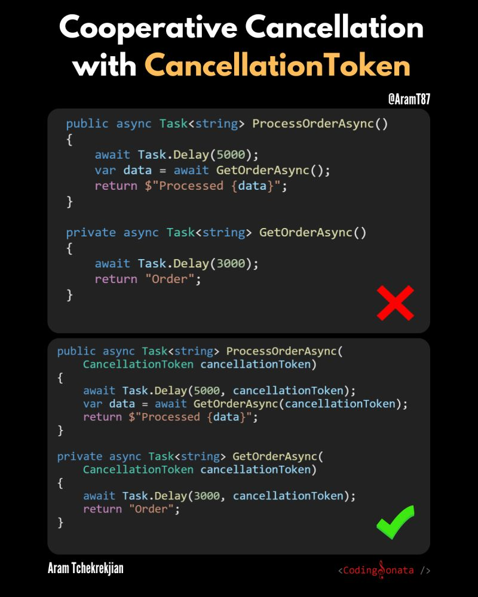
What to Learn
- Synchronous vs asynchronous programming
TaskTask<T>asyncawaitTask.RunTask.WaitTask.WhenAllTask.WhenAnyContinueWith- Cancellation token
- Deadlocks in async code
- ConfigureAwait concept
- ValueTask basics
- Asynchronous programming helps keep applications responsive and non-blocking.
Taskrepresents an asynchronous operation.Task<T>represents an asynchronous operation that returns a value.asyncandawaitsimplify asynchronous programming.Task.Run()runs code on a background thread through the thread pool.Task.WhenAll()waits for all tasks to complete.Task.WhenAny()waits for the first completed task.CancellationTokencancels long-running tasks safely.
15. Multithreading and Parallel Programming
What to Learn
- Process vs thread
- Thread lifecycle
Threadclass- Foreground thread
- Background thread
- Thread pool
- Task Parallel Library
TaskTask<T>Parallel.ForParallel.ForEachParallel.Invoke- PLINQ
- Locking
lockkeywordMonitorMutexSemaphoreSemaphoreSlimReaderWriterLock- Race conditions
- Deadlocks
- Thread safety
- Concurrent collections
- Concurrency vs parallelism
Concurrency vs Parallelism
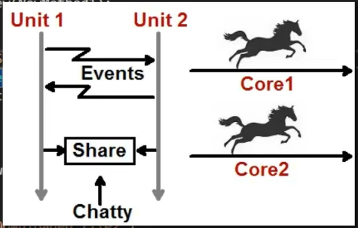
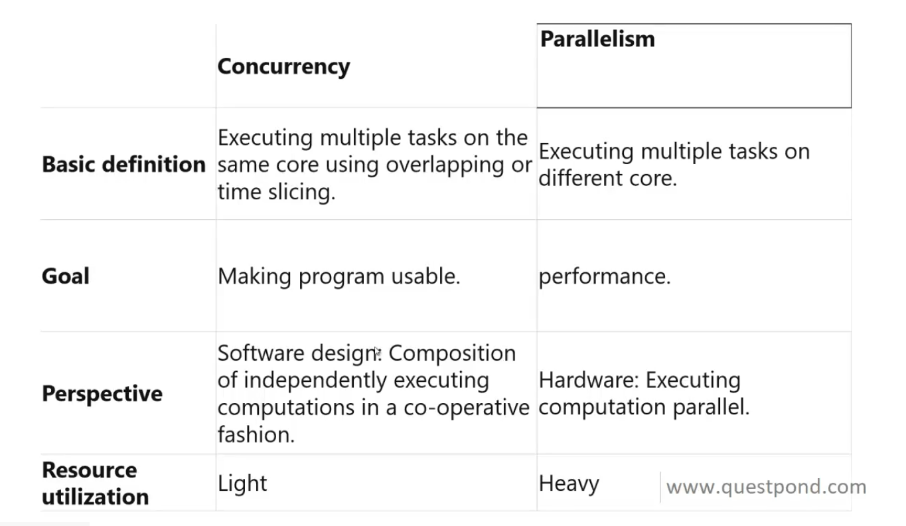
| Feature | Concurrency | Parallelism |
|---|---|---|
| Meaning | Multiple tasks progress together | Multiple tasks run at the same time |
| Execution | Tasks may switch one by one | Tasks execute simultaneously |
| CPU core requirement | Can work on single core | Usually requires multiple cores |
| Goal | Better responsiveness | Better performance/speed |
| Task handling | Interleaving tasks | Running tasks together |
| Example in C# | Task, async/await | Parallel.For, Task.Run() |
| Focus | Managing tasks | Executing tasks faster |
Thread vs TPL
| Feature | Thread | TPL |
|---|---|---|
| Level | Low-level | High-level |
| Namespace | System.Threading | System.Threading.Tasks |
| Management | Manual | Automatic |
| Performance | Slower/heavier | Faster/lighter |
| Resource usage | Heavy | Lightweight |
| Recommended today | Less common | Most common |
| Uses ThreadPool | No by default | Yes |
TPL Hierarchy
TPL (Task Parallel Library)
│
├── Purpose
│ └── Simplifies concurrent and parallel programming in .NET.
│
├── Built On
│ └── ThreadPool
│
├── Core Components
│ │
│ ├── Task
│ │ └── Represents asynchronous operation.
│ │
│ ├── Task<TResult>
│ │ └── Task that returns value/result.
│ │
│ ├── async / await
│ │ └── Simplifies asynchronous programming.
│ │
│ ├── CancellationToken
│ │ └── Cancels running task safely.
│ │
│ └── ContinueWith()
│ └── Executes task after previous task completes.
│
├── Task Execution Methods
│ │
│ ├── Task.Run()
│ │ └── Runs code in background thread.
│ │
│ ├── Task.Wait()
│ │ └── Waits for task completion.
│ │
│ ├── Task.WhenAll()
│ │ └── Waits for all tasks to complete.
│ │
│ └── Task.WhenAny()
│ └── Waits for first completed task.
│
├── Parallel Programming
│ │
│ ├── Parallel.For()
│ │ └── Executes loop iterations in parallel.
│ │
│ ├── Parallel.ForEach()
│ │ └── Executes collection items in parallel.
│ │
│ ├── Parallel.Invoke()
│ │ └── Executes multiple methods simultaneously.
│ │
│ └── PLINQ
│ └── Executes LINQ queries in parallel.
│
├── Best Use Cases
│ │
│ ├── async/await + Task.WhenAll()
│ │ └── API calls, DB calls, network operations.
│ │
│ ├── Parallel.ForEach()
│ │ └── CPU-intensive processing.
│ │
│ ├── Task.Run()
│ │ └── Background processing.
│ │
│ └── CancellationToken
│ └── Cancel long-running operations.
│
└── Benefits
│
├── Better performance
├── Automatic thread management
├── Better scalability
├── Simplified async programming
├── Efficient CPU utilization
└── Easier than manual threadingSynchronization Tools
| Tool | Purpose |
|---|---|
lock | Allows only one thread at a time inside a critical section |
Monitor | Advanced thread synchronization mechanism |
Mutex | Synchronizes threads across processes |
Semaphore | Allows a limited number of threads simultaneously |
SemaphoreSlim | Lightweight in-process semaphore |
ReaderWriterLock | Allows multiple readers but a single writer |
Concurrency Control Hierarchy
Concurrency Control
│
├── Programming Concurrency
│ └── Multiple tasks making progress together.
│
│ ├── Multithreading
│ │ └── Multiple threads executing in application.
│ │
│ ├── async/await
│ │ └── Non-blocking asynchronous execution.
│ │
│ ├── Task Parallel Library (TPL)
│ │ └── Task-based concurrent programming in .NET.
│ │
│ ├── Parallelism
│ │ └── Multiple tasks executing simultaneously on multiple CPU cores.
│ │
│ └── Synchronization
│ │
│ ├── lock
│ │ └── Allows only one thread at a time.
│ │
│ ├── Monitor
│ │ └── Advanced thread synchronization mechanism.
│ │
│ ├── Mutex
│ │ └── Synchronizes threads across processes. Only one instance.
│ │
│ ├── Semaphore
│ │ └── Allows limited number of threads simultaneously. More sophisticated version of mutex. Out-of-process.
│ │
│ ├── SemaphoreSlim
│ │ └── More sophisticated version of lock and monitor. In-process.
│ │
│ └── ReaderWriterLock
│ └── Multiple readers but single writer.
│
└── Database Concurrency Control
└── Prevents data conflicts when multiple users access same data.
├── Why Concurrency Control?
│ │
│ ├── Dirty Read
│ │ └── Reading uncommitted data.
│ │
│ ├── Unrepeatable Read
│ │ └── Same query returns different values.
│ │
│ ├── Phantom Read
│ │ └── New rows appear during same transaction.
│ │
│ └── Lost Update
│ └── One update overwrites another update.
│
├── Concurrency Types
│ │
│ ├── Optimistic Concurrency (Most Common)
│ │ │
│ │ ├── Assumes conflicts are rare.
│ │ ├── No immediate lock on data.
│ │ ├── Conflict checked during update.
│ │ ├── Better performance and scalability.
│ │ ├── Mostly used in Web Apps & EF Core.
│ │ │
│ │ ├── SQL Server
│ │ │ ├── RowVersion
│ │ │ ├── Timestamp
│ │ │ └── Version Column
│ │ │
│ │ └── EF Core
│ │ ├── [Timestamp]
│ │ ├── IsRowVersion()
│ │ ├── Concurrency Token
│ │ └── DbUpdateConcurrencyException
│ │
│ └── Pessimistic Concurrency
│ │
│ ├── Assumes conflicts are common.
│ ├── Locks data immediately.
│ ├── Other users must wait.
│ ├── Prevents simultaneous updates.
│ ├── Mostly used in Banking & Payment Systems.
│ │
│ ├── Lock Types
│ │ │
│ │ ├── Row Lock
│ │ │ └── Locks single row.
│ │ │
│ │ ├── Page Lock
│ │ │ └── Locks group of rows/pages.
│ │ │
│ │ ├── Table Lock
│ │ │ └── Locks entire table.
│ │ │
│ │ ├── Dataset Lock
│ │ │ └── Locks complete dataset/result set.
│ │ │
│ │ ├── Shared Lock (S)
│ │ │ └── Multiple users can read but not update.
│ │ │
│ │ ├── Exclusive Lock (X)
│ │ │ └── Only one transaction can read/write.
│ │ │
│ │ ├── Update Lock (U)
│ │ │ └── Used before converting to exclusive lock.
│ │ │
│ │ ├── Intent Lock
│ │ │ └── Indicates lower-level locks will be used.
│ │ │
│ │ └── Schema Lock
│ │ └── Prevents schema modifications.
│ │
│ └── Transactions
│ │
│ ├── BEGIN TRANSACTION
│ │ └── Starts transaction scope.
│ │
│ ├── COMMIT
│ │ └── Saves all changes permanently.
│ │
│ ├── ROLLBACK
│ │ └── Reverts all changes.
│ │
│ └── WITH (UPDLOCK, ROWLOCK)
│ └── Applies pessimistic locking in SQL Server.
│
└── Isolation Levels
│
├── Read Uncommitted
│ └── Allows dirty reads.
│
├── Read Committed
│ └── Prevents dirty reads.
│
├── Repeatable Read
│ └── Prevents unrepeatable reads.
│
├── Snapshot
│ └── Uses row versioning for consistency.
│
└── Serializable
└── Highest isolation and strict consistency.- Optimistic locking assumes that concurrency conflicts will rarely happen, so there is no lock; it only checks old values against new values during update.
16. Reflection and Attributes
What to Learn
- Reflection basics
TypetypeofGetTypeActivator.CreateInstance- Reading metadata
- Invoking public members
- Attributes
- Built-in attributes
- Custom attributes
- Use cases of reflection
- Performance impact of reflection
- Reflection allows a program to inspect and interact with types and metadata dynamically at runtime.
- Reflection can be used to read metadata and invoke members dynamically.
dynamicuses runtime binding and may use reflection-like behavior internally.
typeof vs GetType()
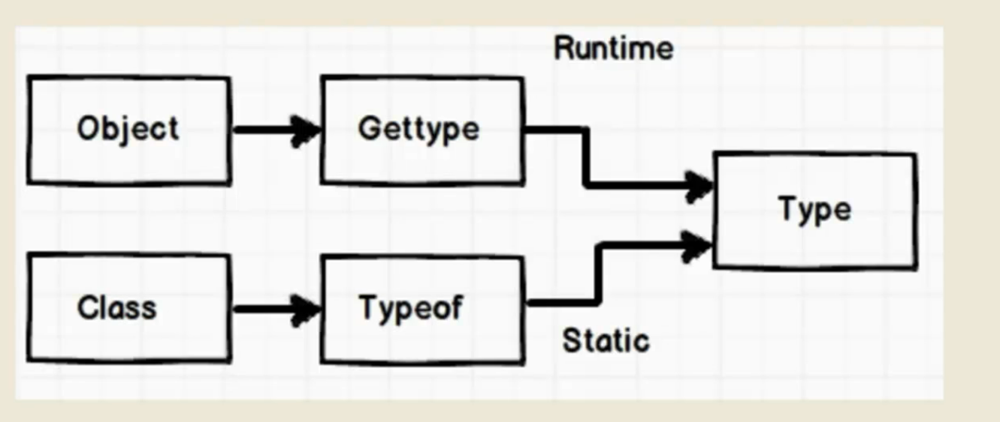
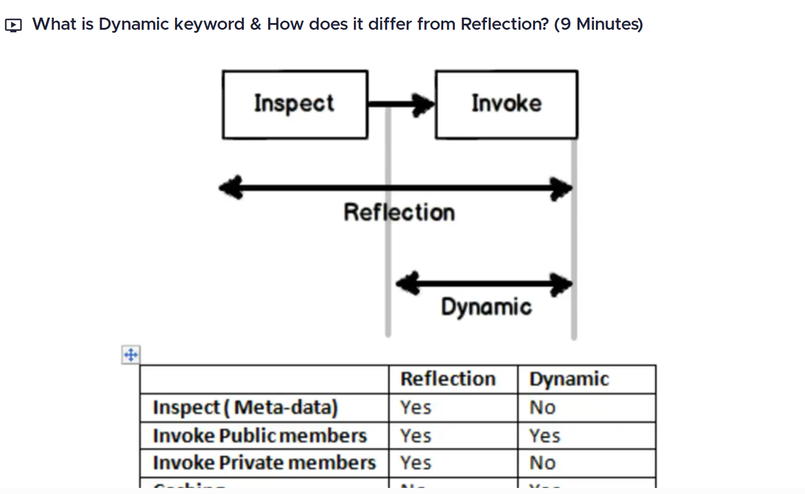
| Feature | typeof | GetType() |
|---|---|---|
| Works on | Type/class name | Object instance |
| Evaluated | Compile time | Runtime |
| Returns | Type object | Type object |
| Null safe | Yes | No |
| Syntax | typeof(int) | obj.GetType() |
17. Records, Tuples, and Modern C# Features
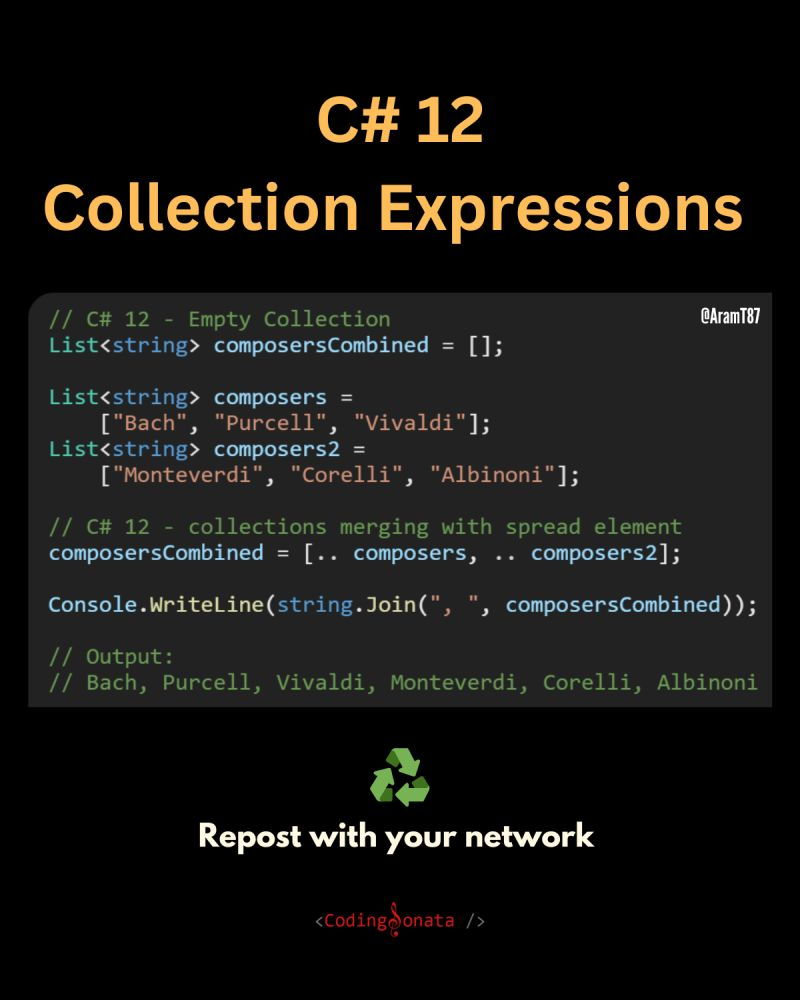
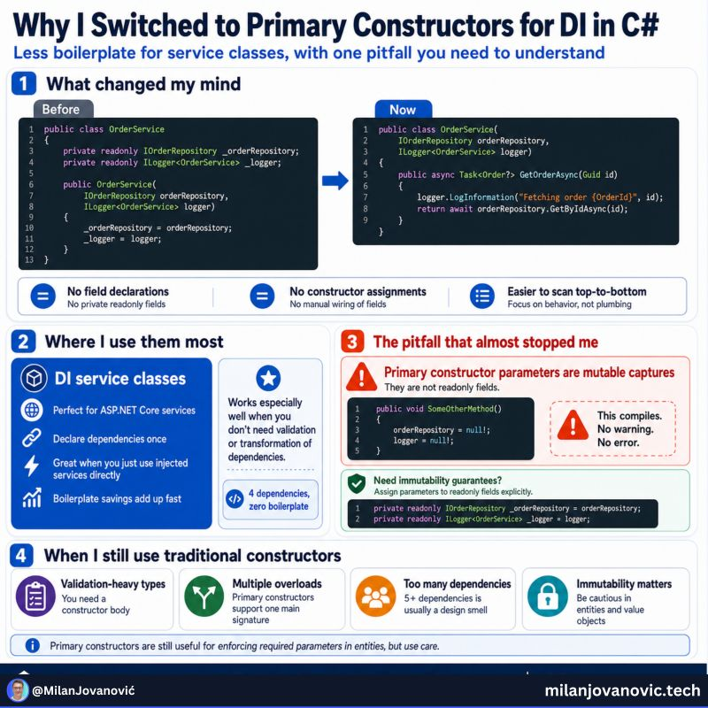
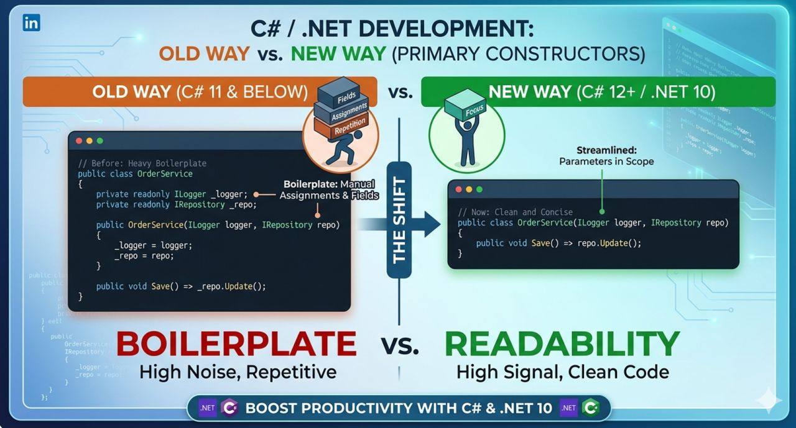
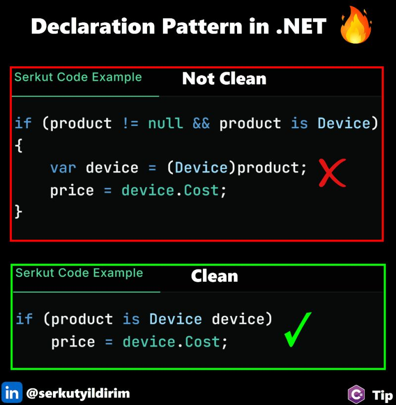
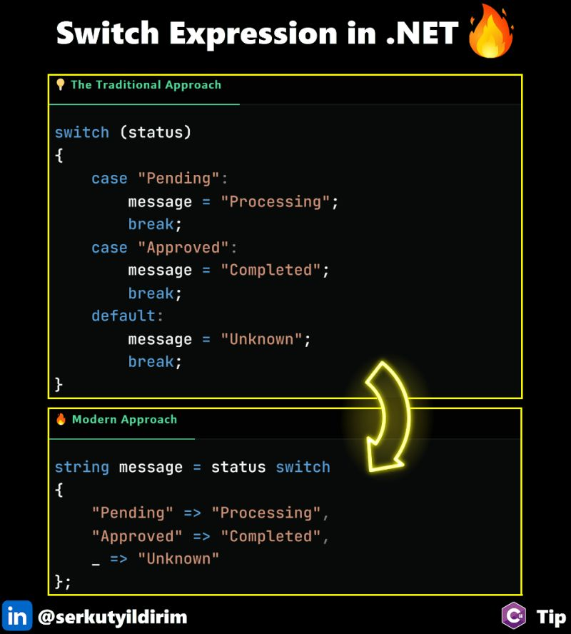
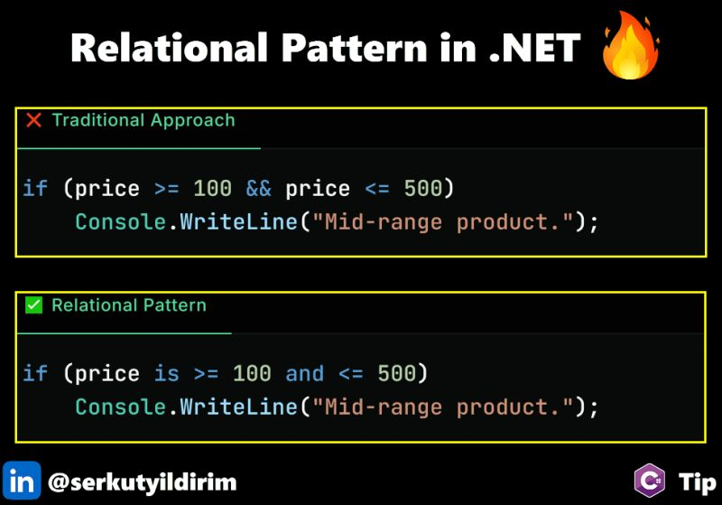
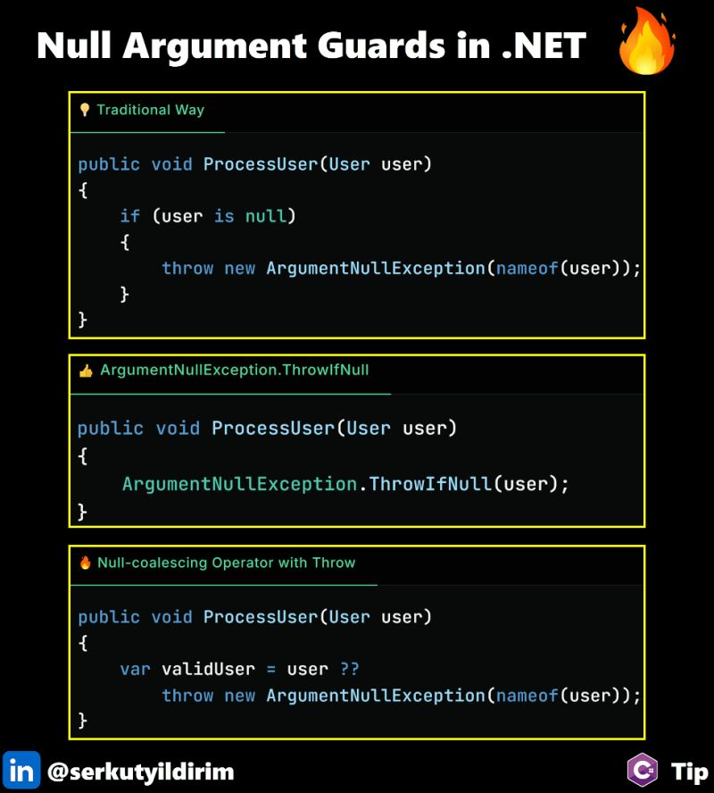
What to Learn
- Records
- Record classes
- Record structs
- Tuples
- Deconstruction
- Pattern matching
- Nullable reference types
- Init-only properties
- Required members
- Target-typed
new - Global using
- File-scoped namespace
- Primary constructors
- Collection expressions
yield returnyield break- Enum
Yield
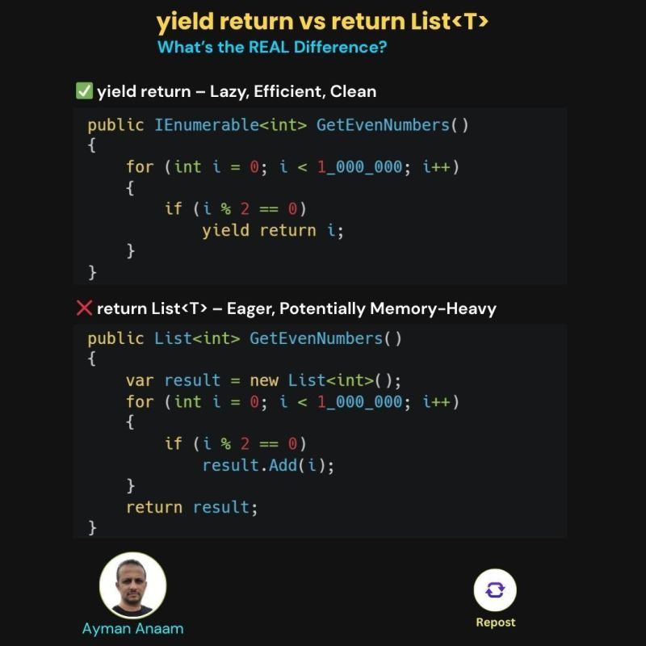
yieldsupports deferred execution.- Values are returned one at a time when requested, not all at once.
yield returnreturns the current value and pauses execution.yield breakstops the iteration completely.yieldpreserves state between iterations.yieldimproves memory usage because all values do not need to be stored in a temporary list.yieldworks withIEnumerableandIEnumerable<T>for custom iteration.
Enum
- An enum represents a group of named constants.
- Enum is a value type.
- Default enum values start from
0. - Values can be custom defined.
- Enum values can be cast to integers and integers can be cast to enum values.
18. Testing in C#
What to Learn
- Unit testing
- Integration testing
- Test-driven development basics
- xUnit
- NUnit
- MSTest
- Mocking
- Moq or similar libraries
- Arrange, Act, Assert pattern
- Test coverage
- Unit tests verify small units of logic independently.
- Integration tests verify multiple parts working together.
- Mocking replaces external dependencies with controlled test objects.
- Arrange, Act, Assert keeps tests readable and consistent.
19. Advanced C# Concepts
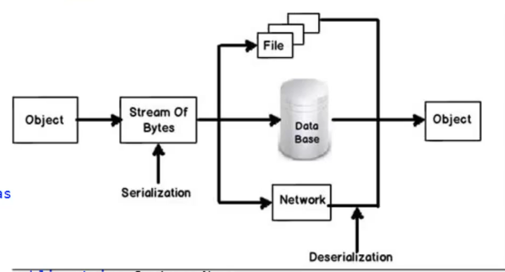
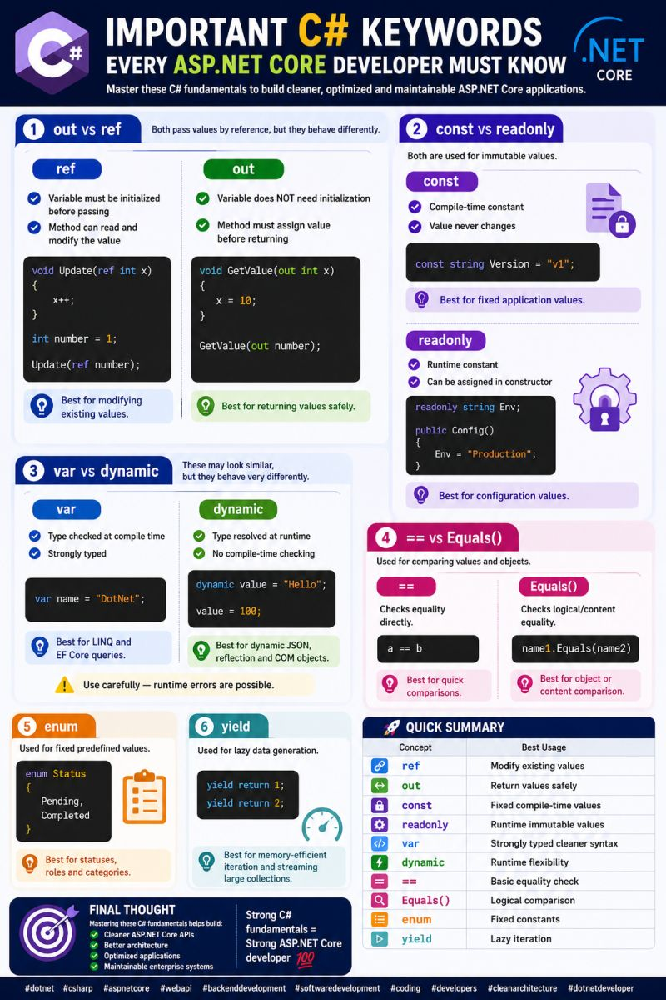
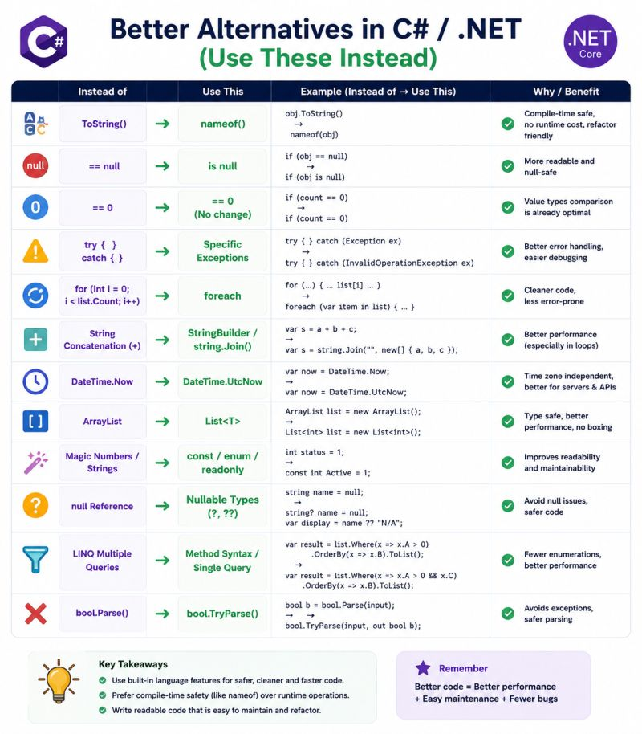
What to Learn
- Expression trees
- Dynamic keyword
- Unsafe code
- Pointers
- Span<T>
- Memory<T>
- Ref structs
- Attributes in depth
- Source generators
- Interceptors concept
- Analyzers
- Nullable annotations
- Custom awaiters
dynamicdelays type checking until runtime.- Runtime errors are possible with
dynamicif the expected member does not exist. - Expression trees represent code as data and are commonly used by query providers.
- Unsafe code allows pointer operations but should be used carefully.
Span<T>andMemory<T>help work efficiently with contiguous memory while reducing allocations.
20. Performance and Best Practices
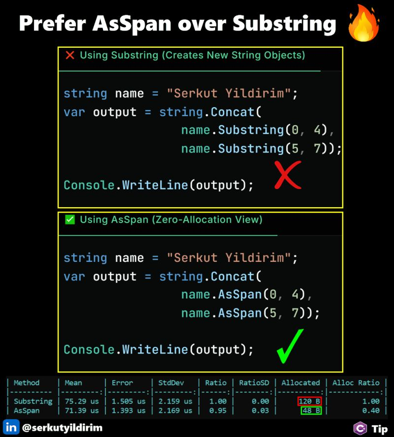
What to Learn
- Big O basics
- Avoiding unnecessary allocations
- Choosing the right collection
- String performance
StringBuilder- Boxing and unboxing performance
- Async performance
- LINQ performance considerations
- Caching basics
- Profiling basics
- BenchmarkDotNet basics
- Logging best practices
- Exception handling best practices
- Naming conventions
Naming Conventions
| Type | Convention | Example |
|---|---|---|
| Property | PascalCase | FirstName |
| Method | PascalCase | CalculateTotal() |
| Class | PascalCase | EmployeeService |
| Interface | PascalCase with I prefix | IRepository |
| Local variable | camelCase | firstName |
| Parameter | camelCase | userId |
| Private field | _camelCase | _userService |
| Constant | PascalCase | MaxLimit |
- Choose the correct collection based on access pattern and lookup needs.
- Avoid repeated string concatenation in loops; use
StringBuilder. - Avoid unnecessary boxing and unboxing.
- Prefer
TryParse()for user input. - Avoid using exceptions for normal control flow.
- Use LINQ carefully for large collections when performance matters.
- Use profiling and benchmarking to measure performance instead of guessing.